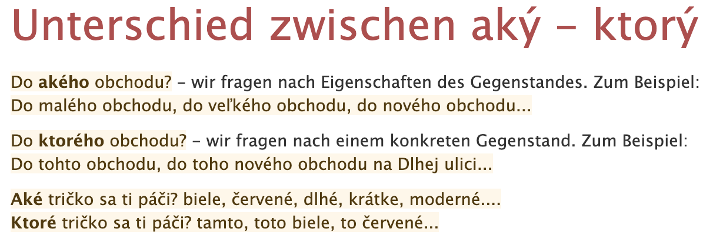
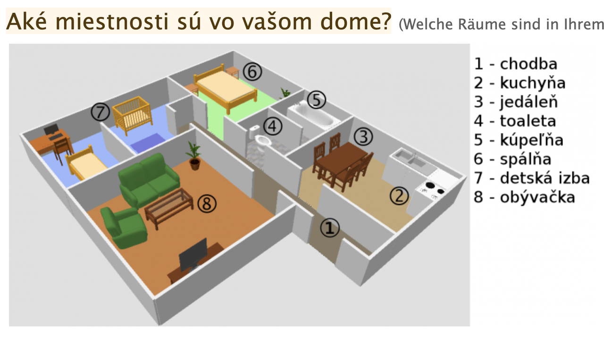
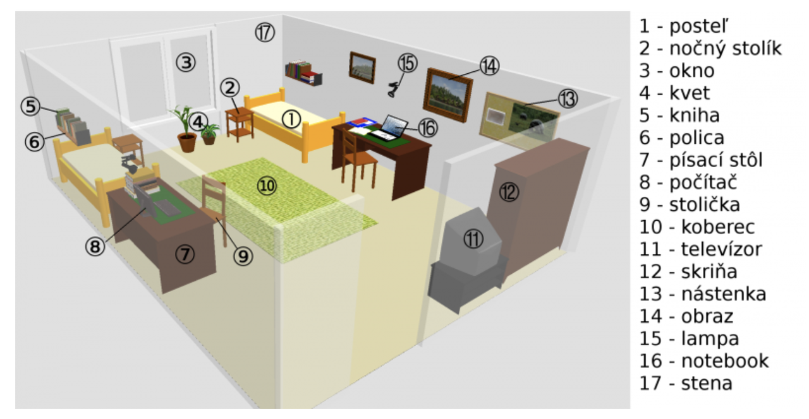
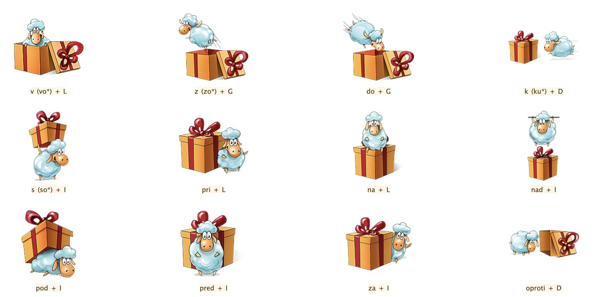

Slovak Learning
Ok. This post is likely not interesting for any visitor. I am learning the language and after a discussion with my girlfriend it turned out I rather write down the new vocabulary for learning the language the fastest.
In this post I write down my progress and I can go back to it at later stages.
This is my test
Chapter: Tages-Programm
General Vocabular
- čižmy = stivali
- dáždnik = ombrello
- domáce úlohy = Hausaufgaben
- dovolenku/prázdniny = vacanza
- fajčiť = fumare
- hladný = affamato
- horúce = caldo
- jesť = mangiare
- piť = bere
- končiť sa = finire
- krátky = corto
- kúpeľne = Badezimmer
- kúpeme sa = fare il bagno (al mare)
- lyžujeme sa = sciare
- nakupovať = einkaufen
- nosiť = indossare
- nový ročník na univerzite = new university year
- obchod = negozio
- obedovať = pranzare
- obliekať sa = vestirsi
- opaľujeme sa = prendere il sole.
- plavky = costume da bagno
- počas = durante
- počasie = tempo
- posledný = ultimo
- prší = piove
- prázdniny = vacanze
- prvý = primo
- ročné obdobia = stagioni
- rukavice = guanti
- sneh = neve
- sneží = nevica
- strom = albero
- študovať = studiare
- teplé = caldo
- trochu = un po'
- týždni = week
- včera = ieri
- vnučka = nipote
- vstávať = alzarsi (al mattino)
- zabávať = intrattenere
- zajtra = domani
- začínať = iniziare
Days of the Week
|
Deň |
Koľký v týždni? |
| pondelok | prvý |
| utorok | druhý |
| streda | tretí |
| štvrtok | štvrtý |
| piatok | piaty |
| sobota | šiesty |
| nedeľa | siedmy |
Months of the year
|
Mesiac |
Koľký v roku? |
Ročné Obdobia |
| január | prvý | zima |
| február | druhý | zima |
| marec | tretí | jar |
| apríl | štvrtý | jar |
| máj | piaty | jar |
| jún | šiesty | leto |
| júl | siedmy | leto |
| august | ôsmy | leto |
| september | deviaty | jeseň |
| október | desiaty | jeseň |
| november | jedenásty | jeseň |
| december | dvanásty | zima |
Numbers
| 1 | jeden | 11 | jedenásť |
| 2 | dva | 12 | dvanást' |
| 3 | tri | 13 | trinást' |
| 4 | štyri | 14 | štrnást' |
| 5 | pat' | 15 | pätnást |
| 6 | šesť | 16 | šestnást |
| 7 | sedem | 17 | sedemnást |
| 8 | osem | 18 | osemnást |
| 9 | devät' | 19 | devätnást |
| 10 | desat' | 20 | dvadsát |
| 21 | dvadsaťjeden |
| 22 | dvadsaťdva |
| 23 | dvadsaťtri |
| 24 | dvadsaťštyri |
| 25 | dvadsaťpät' |
| 26 | dvadsaťšesť |
| 27 | dvadsaťsedem |
| 28 | dvadsaťosem |
| 29 | dvadsaťdevät' |
| 30 | trisat' |
| 40 | 50 | 60 | 70 | 80 |
| štyridsat' | pätdesiat' | šestdesiat | sedemdesiat | osemdesiat |
| 90 | 100 | 1000 | 10 000 |
| devät'destiat | sto | tisíc | milión |
Modalverben
- musiet' = müssen
| ja musim | my musíme |
| ty musíš | vy musíte |
| on/ona/ono musí | oni/ony musia |
- môcť = können, dürfen
| ja môžem | my môžeme |
| ty môžeš | vy môžete |
| on/ona/ono môže | oni/ony môžu |
- chiect' = wollen
| ja chcem | my chceme |
| ty chceš | vy chcete |
| on/ona/ono chce | oni/ony chcú |
- mat' = sollen
| ja mám | my máme |
| ty máš | vy máte |
| on/ona/ono má | oni/ony majú |
- smiet' = dürfen
| ja smiem | my smieme |
| ty smieš | vy smiete |
| on/ona/ono smie | oni/ony smú |
- vedieť = wissen, können (Fähigkeit haben), kennen
| ja viem | my vieme |
| ty vieš | vy viete |
| on/ona/ono vie | oni/ony vedia |
Notice that with all the modal verbs you use verbs in their infinite form like with all the languages you know so far. For instance:
Doobeda musím byť v škole a musím študovať.
Prepositions
- Idem do domu. <=> Ich gehe nach Hause.
- Idem od domu. <=> Ich gehe aus der Nähe von dem Haus.
- Idem z domu. <=> Ich gehe aus dem Haus.
- Ja som v doma <=> Ich bin in dem Haus
Chapter: Kleidung und Farben
General Vocabulary
- akurát = appena
- blahoželám = mazaltov
- blúzka = Bluse
- bunda = Jacke
- celkom dobre = piuttosto bene
- čiapka = Mütze
- čižmy = Stiefel
- drogéria = Drogerie
- farba = Farbe
- hlava = Kopf; Kapitel
- hľadám = sto cercando
- kabát = Mantel
- kníhkupectvo = libreria
- košeľa = Hemd
- krátke nohavice = pantalone corto
- naučila = insegnare
- noha = Bein; Fuß
- nohavice = pantalone
- obchod = Geschäft, Laden
- obchodné centrum = Einkaufszentrum, Geschäftszentrum / shopping center
- oblečenie = Bekleidung
- obraz, obrázok = Bild, Abbildung
- obuv = Schuhe
- obúvať si = mettersi le scarpe
- oko = Auge
- plavky = Badeanzug
- ponožky = Socken
- potraviny = Lebensmittel
- pyžamo = Pyjama, Schlafanzug
- rifle = Jeans
- ruka = Hand
- rukavice = Handschuhe
- sako = giacca (tipo giacca da vestito)
- skúšobná kabínka = Umkleidekabine
- sukňa = Rock
- sveter = Pullover
- šál = Schal
- šaty = Kleid
- teraz = adesso
- textil = Kleidungen
- topánka = Schuh
- topánky = Schuhe
- tričko = T-Shirt
- doplnok (k oblečeniu) = Zubehör (zur Kleidung) (supplemento)
- lodičky = tacchi alti
- tenisky = Turnschuhe
- opasok = Gürtel
- kabelka = Handtasche
- narodeniny = Geburtstag
- elegantný = elegant
- blond = blond, blondhaarig
- čierno = biely schwarz-weiß
- farebný = bunt
- fialový = violett
- hnedý = braun
- letný = sommerlich
- obľúbený = beliebt
- oranžový = orange
- rovnaký = gleich, dasselbe
- ružový = rosa
- ryšavý = rothaarig
- s nami = with us
- samozrejme = ovviamente
- sivý = grau
- tamto = dort
- všetci = alle
- blahoželať = gratulieren
- chcieť = wollen
- ďakovať = danken
- mať oblečené = gekleidet sein
- nosiť (oblečenie, topánky) = tragen (Kleidung, Schuhe)
- obliekať si = anziehen, (sich) bekleiden, (sich) kleiden
- obúvať si = Schuhe anziehen
- páčiť sa = gefallen
- pomáhať = helfen
- vlas = Haar
- vybrať si = aussuchen, auswählen
- vyskúšať si = anprobieren
- vyzliekať si = spogliarsi
- Aha pozri! = Ah, schau mal!
- Kde je skúšobná kabínka? = Wo ist die Umkleidekabine?
- Môžem si to vyskúšať? = Kann ich das anprobieren?
- To sa mi (ne)páči. = Dies gefällt mir (nicht).
Wie vs. Welcher

Colors
- biela = bianco
- žltá = giallo
- červená = rosso
- ružová = rosa
- modrá = blu
- zelená = verde
- hnedá = marrone
- čierna = nera
- oranžová = arancione
- fialová = viola
- sivá = grigio
Chapter: Wie spät ist es
Vocabulary
- cesta = Straße, Weg, Bahn, Reise, Fahrt
- chvíľa = Augenblick, Weile
- minúta = Minute
- pero = Stift
- práca (zamestnanie) = Arbeit (Beschäftigung)
- rozvrh hodín = Stundenplan
- sekunda = Sekunde
- stôl = Tisch
- váza = Vase
- zmena = Änderung, Abwechslung, Wechsel, Wandlung
- kam = wohin
- málo = wenig
- niekoľko = einige, ein paar
- pár, zopár = paar, ein paar
- posledný = letzter
- veľa = viel, sehr
- ísť do práce = zur Arbeit gehen
- končiť sa = aufhören, enden, zu Ende gehen
- narodiť sa = geboren werden
- obľúbený predmet = materia preferita
- počítať = rechnen, berechnen, zählen
- ponáhľať sa = beeilen, hasten
- rovnať sa = gleichen, gleich sein, gleichkommen, sich gleichstellen
- stať sa = geschehen, passieren; werden
- stretnúť sa = sich treffen, sich begegnen
- trvať = dauern
- začínať sa = anfangen, beginnen
- len = just
- popoludní = am Nachmittag, nachmittags
- radšej = lieber
- tak (približne) = so (circa, etwa, ungefähr, um, gegen)
- viac = mehr
- výborne = ausgezeichnet, vorzüglich
- plus = plus
- mínus = minus
- krát = mal (im Sinne der mathematischen Berechnung)
- deleno = geteilt durch
- Čo sa stalo? = Was ist los?
- Koľko je hodín? = Wie spät ist es?
- Prídem o chvíľu = Ich komme später.
- To je super = Das ist super.
- Kedy sa to stalo? = Wann ist es passiert?
- okolo desiatej = gegen zehn Uhr
- najneskôr o piatej = am spätesten um fünf Uhr
- o deviatej = um neun Uhr
- o štvrť na desať = um Viertel nach neun
- o pol desiatej = um halb zehn
- o tri štvrte na desať = um Viertel vor zehn
Chapter: Welcher Tag ist heute
Vokabeln
- brigáda = Ferienarbeit, Ferienjob (lavoro volontario)
- hora = Berg / Wald
- kalendár = Kalender
- koniec = Ende, Schluss
- počasie = Wetter
- prázdniny = Ferien
- ročné obdobie = Jahreszeit
- ročník = Schuljahr
- často = spesso
- semester = Semester
- skúška = Examen, Prüfung, Test
- sneh = Schnee
- vysoká škola = Hochschule
- zajtra = morgen
- pondelok = Montag
- utorok = Dienstag
- streda = Mittwoch
- štvrtok = Donnerstag
- piatok = Freitag
- sobota = Samstag
- nedeľa = Sonntag
- január = Januar
- február = Februar
- marec = März
- apríl = April
- máj = Mai
- jún = Juni
- júl = Juli
- august = August
- september = September
- október = Oktober
- november = November
- december = Dezember
- jar = Frühling
- leto = Sommer
- jeseň = Herbst
- zima = Winter
- horúci = heiß
- chladný = kalt, kühl
- jarný = Frühlings-
- jesenný = Herbst-, herbstlich
- teplý = warm
- zimný = Winter-, winterlich
- niekam = irgenwohin
- niekde = irgendwo
- vtedy = damals, seinerzeit
- vždy = immer, jederzeit
- kúpať sa = (sich) baden
- lyžovať sa = Schi laufen
- nájsť = finden
- opaľovať sa = sich sonnen
- prezerať si = ansehen, begucken, beschauen, besichtigen
- zvyknúť = sich angewöhnen (for instance: V lete zvyknem nosiť tričko = im sommer sind wir gewöhnt T-shirzs zu tragen.)
- zvykol som si (napr. dlho spať) = ich habe mir angewöhnt (z. B. lange zu schlafen)
- blízko = nah
- určite = sicher, gewiss, bestimmt
- konečne = endlich, schließlich
- možno = möglicherweise, vielleicht
- zase = wieder
- celý = ganz
- Aký je dnes deň? = Welcher Tag ist heute?
- cez leto, v lete = im Sommer
- cez prázdniny = in den Ferien
- Koľkého je dnes? = quanti ne abbiamo oggi? (giorni)
- na vysokej škole = in der Hochschule
Konjugation Zukunftsform
- byt' = sein
| ja budem | my budeme |
| ty budeš | vy budete |
| on/ona/ono bude | oni/ony budú |
Chapter: Wohnen
- balkón = Balkon
- budík = Wecker, Weckuhr
- byt = Wohnung
- bývanie = Wohnen
- chladnička = Kühlschrank
- dedina = Dorf
- detská izba = Kinderzimmer
- detská postieľka = Kinderbett
- dvere = Tür
- hotel = Hotel
- chodba = Diele, Flur
- izba = Raum, Zimmer
- jedáleň = Esszimmer
- jedálenský kút = Essecke
- koberec = Teppich
- kuchyňa = Küche
- kúpeľňa = Badezimmer
- lampa = Lampe, Leuchte
- miesto = Ort, Platz, Position, Standort, Stelle
- mikrovlnka = Mikrowelle
- nájom = Miete, Pacht
- nástenka = Wandzeitung
- návšteva = Besuch ,Visite
- nočný stolík = Nachttisch
- obývačka = Wohnzimmer
- panelák = Plattenbau
- písací stôl = Schreibtisch
- počítač = Computer
- polica = Regal
- privát = Privatquartier
- prízemie = Erdgeschoss
- rodinný dom = Eigenhaus, Familienhaus
- skriňa = Kommode, Schrank
- spálňa = Schlafzimmer
- sporák = Herd
- stolička = Stuhl
- televízor = Fernseher
- toaleta = Toilette, WC
- učebnica = Schulbuch
- umývačka riadu = Spülmaschine
- umývadlo = Waschbecken
- vaňa = Badewanne
- výhľad = Anblick, Aussicht
- záhrada = Garten
- zrkadlo = Spiegel
- ďalší = weitere
- drahý = kostbar, teuer; lieb
- hranatý = eckig
- lacnejší = billiger, preisgünstiger
- lacný = billig, preisgünstig, preiswert
- lepší = besser
- menší = kleiner
- najväčší = größte
- prenajatý = gemietet
- väčší = größer
- vlastný = eigen
- dať, dávať = geben
- nachádzať sa = sich befinden
- navštíviť = besuchen
- ďaleko = fern, weit
- predtým = früher, vorher
- nad = über, an
- okolo = um, etwa
- oproti = gegen, gegenüber
- pod = unter
- pri = bei, an
- samozrejme = natürlich, selbstverständlich
- za = hinter
- ako, než = als, wie
- Bývam na internáte. = Ich wohne im Studentenwohnheim.
- Čo máš nové? = Was hast du Neues?
- Jasné = Ja klar!
- Je to celkom blízko. = Es liegt ganz nah.
- na návšteve = zu Besuch
- Poďte ďalej! = Kommen Sie herein! / Kommt rein!
- To nevadí. = Das macht nichts.
- Vitajte = Willkommen!
- spolu = zusammen
- Z chodby sa ide do kuchyne. = Vom Flur geht es in die Küche.
- nočné stolíky = comodini
- gauč = couch (remember from the pronunciation)
- okno = fenster
- zošit = Heft
- poschodie = pavimento
Haus und hausobjekte


Chapter: Schulsystem und Berufe
- angličtina = Englisch
- autor = Autor, Verfasser
- čašník = Kellner
- dejepis = Geschichte, Historie
- esperantista = Esperantist
- esperanto = Esperanto
- fotograf = Fotograf, Lichtbildner
- francúzština = Französisch
- futbalista = Fußballer, Fußballspieler
- fyzika = Physik
- gymnázium = Gymnasium
- hokejista = Eishockeyspieler
- hotelová = akadémia Hotelakademie
- hrdina = Held
- internet = Internet
- internetová adresa = Internetadresse
- krajina = Land, Staat
- kuchár = Koch
- kultúra = Kultur
- kurz = Kurs
- lekár = Arzt
- literatúra = Literatur
- matematika = Mathematik
- materská škola, škôlka = Kindergarten
- obchodná akadémia = Handelsakademie
- odbor = Fach, Fachrichtung, Bereich, Branche
- písomka = Prüfung
- policajt = Polizist
- poľština = Polnisch
- právnik = Anwalt, Jurist
- predavač = Verkäufer
- predmet = Ding, Gegenstand, Objekt, Sache / Fach, Lehrfach
- povolanie = Welchen Beruf hast du? Ich arbeite als …
- prírodopis = Naturkunde
- profesor = Professor
- psychológ = Psychologe
- sekretár = Sekretär
- stredná škola = Mittelschule
- sudca = Richter
- svet = Welt
- štúdium = Studium
- taliančina = Italienisch
- telesná výchova = Sportunterricht
- hudobná výchova = educazione musicale
- trieda = Klasse, Schulklasse
- typ = Art, Typ
- vyučovacia hodina = Schulstunde, Unterrichtsstunde
- základná škola = Grundschule, Volksschule
- žiak = allievo
- Napríklad = Zum Beispiel
- zemepis = Erdkunde, Geografie
- známka = Note
- cudzí = fremd
- elektrotechnický = elektrotechnisch
- ľahký = einfach, leicht
- vtipný = funny
- lebo = because
- všetky = tutti
- medzinárodný = international
- pedagogický = pädagogisch
- poľský = polnisch
- slovenský = slowakisch
- ťažký = schwer, schwierig, mühsam
- umelecký = künstlerisch
- zdravotnícky = Gesundheits-, medizinisch, ärztlich
- dostať (známku) = erhalten (eine Note) / ricevere (ad esempio un voto)
- pracovať = arbeiten
- prenocovať = prenottare
- skúsiť = probieren, versuchen
- študovať = lernen, studieren
- ukázať = anzeigen, zeigen
- využiť = ausnutzen, benutzen, nutzen
- zvyčajne = gewöhnlich, normalerweise, üblich
- povinne = obligatorisch, pflichtig
- znovu = wieder
- zadarmo = gratis, kostenlos
- takmer = beinahe, fast
- často = häufig, oft
- fíha = Oho!
- vek = periodo
- učilište = istituto tecnico
- chodiť = besuchen
- chodiť do šiestej triedy = sechste Klasse besuchen
- chodiť do školy = eine Schule besuchen
- vybrať si školu = eine Schule wählen
- cudzie jazyky = Fremdsprachen
- mám rád + Akkusativ = mir gefällt
- nemám rád + Akkusativ = mir gefällt nicht
- výborný výsledok = risultato eccellente
- výsledok = risultato
- chválitebný = lodevole
- dostatočný = sufficiente
- nedostatočný = insufficiente
Deklinationen
| *Maskulin* | Singular | Plural |
| Nominativ | chlap | chlap*i* |
| Genitiv | chlap*a* | chlap*ov* |
| Dativ | chlap*ovi* | chlap*om* |
| Akkusativ | chlapc*a* | chlapc*ov* |
| Lokativ | chlapc*ovi* | chlapc*och* |
| Instrumentalis | chlapc*om* | chlapc*ami* |
| *Feminin* | Singular | Plural |
| Nominativ | mama | mam*y* |
| Genitiv | mam*y* | mám |
| Dativ | mam*e* | mam*ám* |
| Akkusativ | mam*u* | mam*y* |
| Lokativ | mam*e* | mam*ách* |
| Instrumentalis | mam*ou* | mam*ami* |
with an adjective
| *Feminin* | Singular | Plural |
| Nominativ | Karlova izba | Karlov*e* izb*y* |
| Genitiv | Karlov*ej* izb*y* | Karlov*ých* iz*ieb* |
| Dativ | Karlov*ej* izb*e* | Karlov*ým* izb*ám* |
| Akkusativ | Karlov*u* izb*u* | Karlov*e* izb*y* |
| Lokativ | Karlov*ej* izb*e* | Karlov*ých* izb*ách* |
| Instrumentalis | Karlov*ou* izb*ou* | Karlov*ými* izb*ami* |
| *Maskulin* | Singular | Plural |
| Nominativ | známy hokejista | znám*i* hokejist*i* |
| Genitiv | znám*eho* hokejist*u* | znám*ych* hokejist*ov* |
| Dativ | znám*emu* hokejist*ovi* | znám*ym* hokejist*om* |
| Akkusativ | znám*eho* hokejist*u* | znám*ych* hokejist*ov* |
| Lokativ | znám*om* hokejist*ovi* | znám*ych* hokejist*och* |
| Instrumentalis | znám*ym* hokejist*om* | znám*ymi* hokejist*ami* |
Notice that with:
-
Kam- na + akkusativ
- do + genitiv
-
Kde- v + lokativ
- na + lokativ
Examples:
-
KamDo škôlky chodia deti od troch do šesť rokov.
Na základnú školu chodia žiaci od šesť do pätnásť rokov.
-
KdeMoja malá sestra je teraz v škôlke.
Štúdium na strednej škole trvá štyri roky.
Notice, how kam implies a direction, while kde implies a location.
Verb Declination
Notice that verbs in the present form with the infinite form ending
with ovat, for instance nakupovať, are conjugated using the ujem
form, for instance:
| ja | nakupujem |
| tyn | nakupuješ |
| on/ona/ono | nakupuje |
| my | nakupujeme |
| vy | nakupujete |
| oni/ony | nakupujú |
For the verbs ending in jsť such as nájsť the vergangenheit
declination takes the form of šiel.
| ja | som našiel |
| ty | som našla |
| on/ona/ono | našiel/našla/našlo |
| my | sme našli |
| vy | ste našli |
| oni/ony | našli |
Proposizioni
- Kedy = Wann
- Ako = Wie
- Čo = Was
- Z = from
- Za = hinter; behind
- Do = to
- Tam = there
- od + Genitiv, do + Genitiv = dauert von … bis …
- od XX rokov = ab XX Jahre
- pred + instrumentalis = vor XXX Zeit (example: pred piatimi minútami)
- o + akkusativ = in XXX Zeit (example: o päť minút)
- kom? = über wen?
- čom? = über was?
- kde? = wo/woher/wohin (static -> sein)
- kam? = wo/woher/wohin (dynamic -> gehen)
- pri = at/beside/near/by, beim (exaple pri univerzite je kaviareň)
- vo = innerhalb
- na = auf der (z.B Bild); on (eng); sul(ita)
- nad = über; above/over/beyond
- pod = below
- oproti = gegen, gegenüber
- pred = ahead of/in front of (an object; see diff with time pred dimension)
- po = nach
- v = im/am tag…
- kto = wer?
- ešte = noch/ancora/still
- u nás = bei uns
- k = towards
- s = with
- Každá = jeder
- niekam = irgenwohin
- niekde = irgendwo
- vtedy = damals, seinerzeit
- vždy = immer, jederzeit

Fragen
- Aký = how (i.e how do you want your house to be?)
- Ktorý = welcher (welcher haus willst du?) (spezifisch).
Martina's words
- voda = acqua
When to use lokativ?
This you still have better to understand. You discussed with Martina some months ago but by now you forgot.